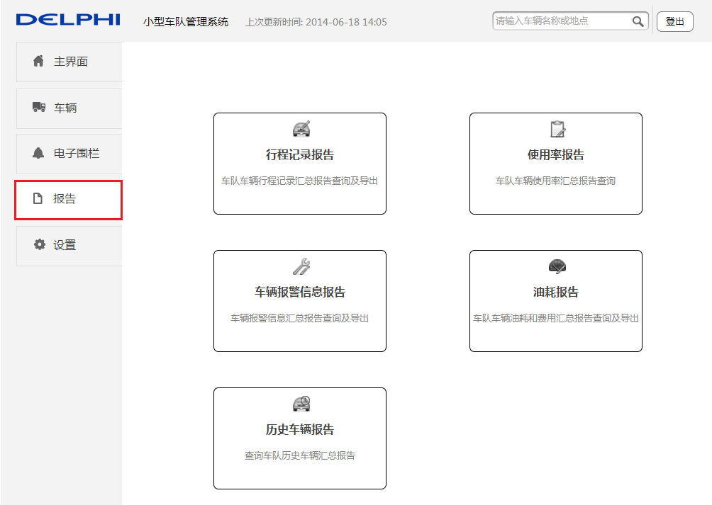
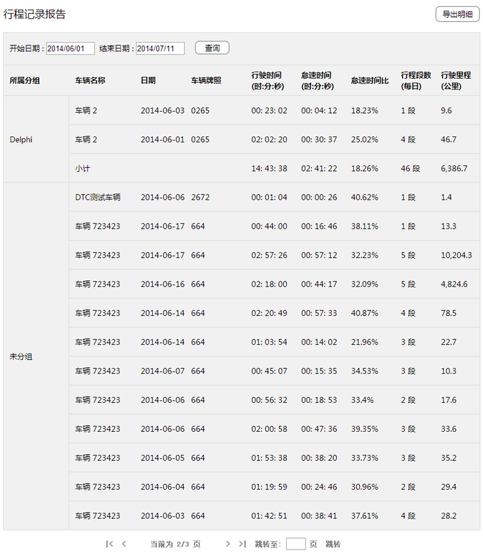
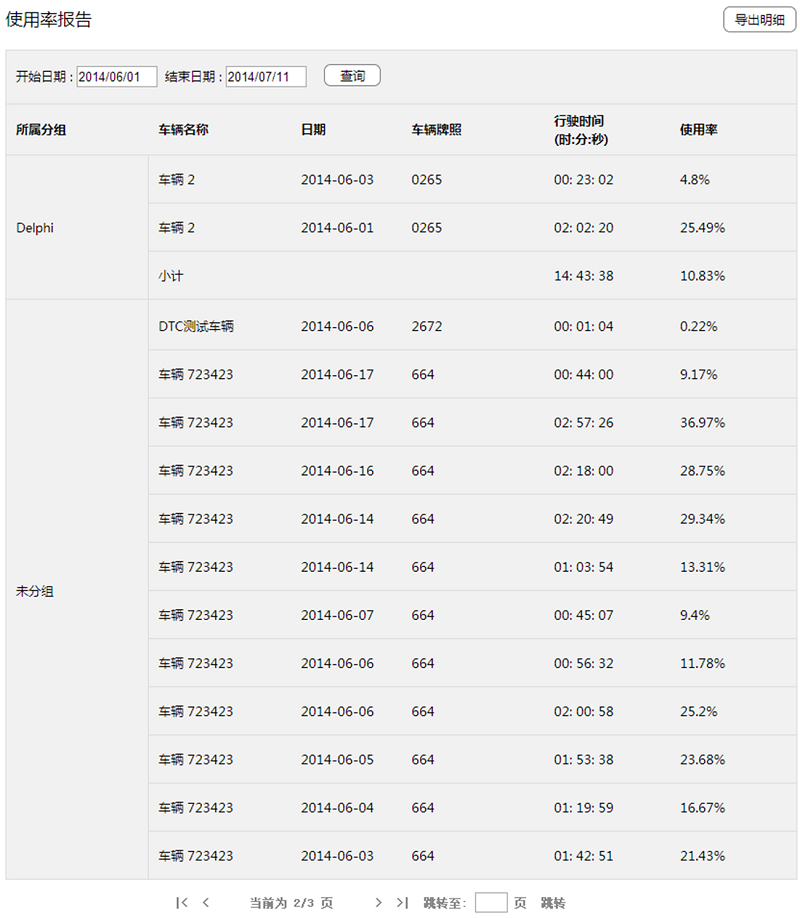
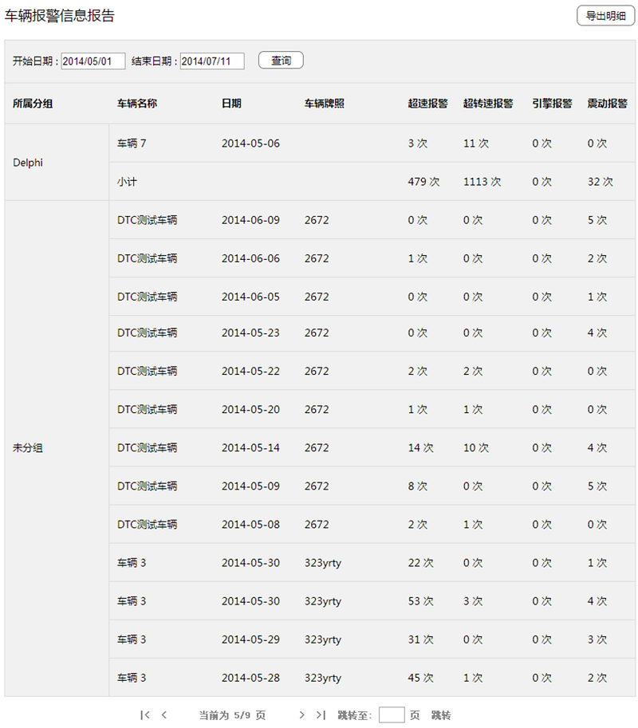
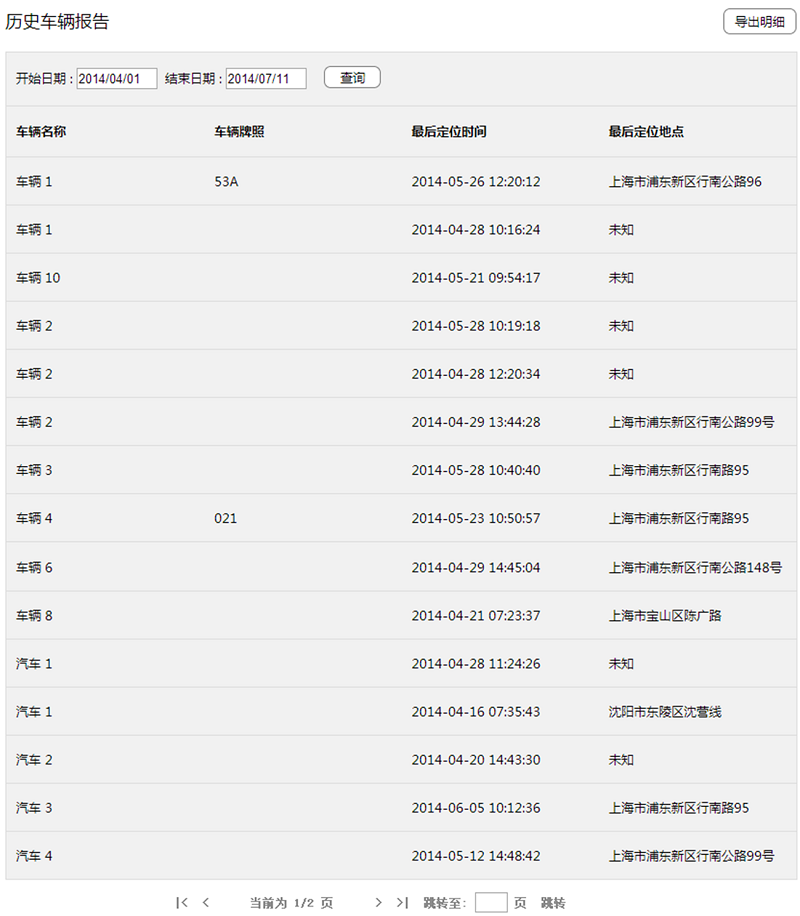

点击左侧菜单中的【报告】，可以进入报告页面。
报告页面会显示行程记录报告、使用率报告、车辆报警信息报告、油耗报告以及历史车辆报告。点击相应的报告即可进入对应的报告页面，并可以执行导出报告详情的操作。

行程记录报告
点击行程记录报告模块，可进入行程记录报告页面。
行程记录报告页面显示整个车队的车辆行程记录汇总。

点击时间下拉框，选择开始日期和结束日期，点击查询按钮，可以查询指定时间段内的车辆行程记录。默认开始日期为上一天的日期，默认结束日期为当天日期。
点击导出明细按钮，可以以CSV格式导出所选年月的车辆行程记录报告。
使用率报告
点击使用率报告模块，可进入使用率报告页面。
使用率报告页面显示整个车队下车辆使用率记录汇总。

点击时间下拉框，选择开始日期和结束日期，点击查询按钮，可以查询指定时间段内的车辆使用率报告。默认开始日期为上一天的日期，默认结束日期为当天日期。
点击导出明细按钮，可以以CSV格式导出所选年月的车队车辆使用率报告。
车辆警报信息报告
点击车辆报警信息报告模块，可进入车辆报警信息报告页面。
车辆报警信息报告页面显示整个车队下的车辆报警信息汇总。

点击时间下拉框，选择开始日期和结束日期，点击查询按钮，可以查询指定时间段内的车辆报警信息。默认开始日期为上一天的日期，默认结束日期为当天日期。
点击导出明细按钮，可以以CSV格式导出所选年月的车辆报警信息报告。
油耗报告
当前版本此功能暂未开放。
历史车辆报告
点击历史车辆报告区域，可进入历史车辆报告页面。
历史车辆报告报告页面显示整个车队下历史车辆的汇总。

点击时间下拉框，选择开始日期和结束日期，点击查询按钮，可以查询指定时间段内的历史车辆信息。默认开始日期为上一天的日期，默认结束日期为当天日期。
点击导出明细按钮，可以以CSV格式导出所选年月的车队历史车辆报告。